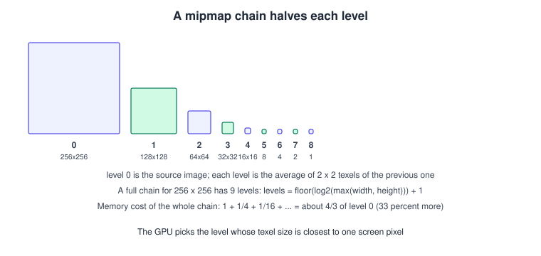
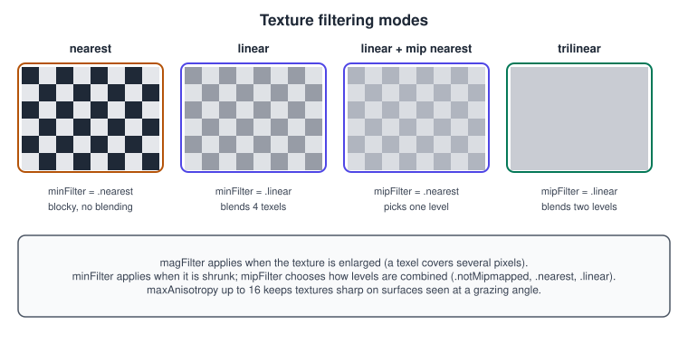
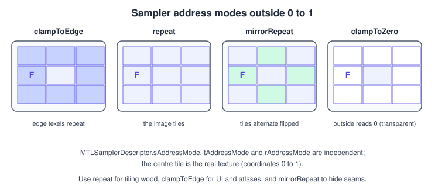

Textures and Samplers
|
This content was generated with the assistance of AI and should be verified against the official documentation before being relied on in production. |
A texture is an image the GPU can read quickly and in a particular way: it is stored in a layout the hardware likes, it can be
shrunk into a chain of smaller copies (mipmaps), and it is read through a sampler that decides how to blend neighbouring texels.
The two objects are separate in Metal: the MTLTexture holds the pixels, the MTLSamplerState holds the reading rules, and any
texture can be read with any sampler.
The facts were checked in November 2026. The page documents Metal 4 (26 operating systems and later), the Metal 3 API that
coexists with it, MetalKit’s MTKTextureLoader and Metal Shading Language 4.1 (27 operating systems). It runs on iOS, iPadOS, macOS,
tvOS and visionOS; compressed format support depends on the GPU family, as noted below. In the Metal Bookshelf running example
the book gets its cover, spine and page textures here (the shared PNG files bookshelf-cover.png, bookshelf-spine.png,
bookshelf-pages.png and bookshelf-wood.png, shipped with the site next to bookshelf.glb); the
step after Buffers and Vertex Descriptors and before
Lighting Fundamentals. The general theory is in
Textures, Sampling and Mipmaps; the OpenGL version is
Textures and Samplers in OpenGL.
Loading a texture with MTKTextureLoader
MTKTextureLoader decodes common image formats (such as PNG, JPEG and TIFF) from files, asset catalogs, in-memory data, CGImage
and Model I/O textures into an MTLTexture. Each method exists in a throwing synchronous form and an asynchronous form with a completion handler; the
newTextures variants load several at once. Loading is the slow part of starting a level, so prefer the asynchronous forms and
load while the previous frame renders.
import MetalKit
struct BookTextures {
let cover: MTLTexture
let spine: MTLTexture
let pages: MTLTexture
}
func loadBookTextures(device: MTLDevice, bundle: Bundle = .main) throws -> BookTextures {
let loader = MTKTextureLoader(device: device)
let options: [MTKTextureLoader.Option: Any] = [
.SRGB: true, // colour data, decode to linear in the shader
.generateMipmaps: true, // build the whole chain
.origin: MTKTextureLoader.Origin.bottomLeft, // see the origin notes below
.textureUsage: MTLTextureUsage.shaderRead.rawValue, // read-only: lets Metal optimise
.textureStorageMode: MTLStorageMode.private.rawValue // GPU-only
]
func load(_ name: String) throws -> MTLTexture {
guard let url = bundle.url(forResource: name, withExtension: "png") else {
throw CocoaError(.fileNoSuchFile)
}
let texture = try loader.newTexture(URL: url, options: options)
texture.label = name
return texture
}
return BookTextures(cover: try load("bookshelf-cover"),
spine: try load("bookshelf-spine"),
pages: try load("bookshelf-pages"))
}Source: MTKTextureLoader
The options (MTKTextureLoader.Option):
| Option | Meaning and advice |
|---|---|
|
|
|
|
|
|
|
|
|
An |
|
An |
|
An |
|
How cube map faces are arranged in a single source image (for example a vertical strip). |
|
Load a multi-image source as an array texture. |
Common mistakes: forgetting .SRGB so colours look washed out or too dark, setting .SRGB: true on a normal map and getting bent
lighting, and relying on the loader for a texture you will render into: render targets are created from a descriptor with the .renderTarget
usage.
Building a texture by hand
When the pixels come from code (a procedural noise, a 1x1 white default texture, a CPU-decoded image), describe the texture with an
MTLTextureDescriptor:
import Metal
func makeSolidTexture(device: MTLDevice, color: SIMD4<UInt8>, label: String) -> MTLTexture? {
let d = MTLTextureDescriptor.texture2DDescriptor(pixelFormat: .rgba8Unorm,
width: 1, height: 1,
mipmapped: false)
d.usage = .shaderRead
d.storageMode = .shared
guard let texture = device.makeTexture(descriptor: d) else { return nil }
texture.label = label
var pixel = color
texture.replace(region: MTLRegionMake2D(0, 0, 1, 1),
mipmapLevel: 0,
withBytes: &pixel,
bytesPerRow: MemoryLayout<SIMD4<UInt8>>.stride)
return texture
}Source: MTLTextureDescriptor
Key descriptor properties:
| Property | Notes |
|---|---|
|
|
|
See the next section. |
|
Dimensions in texels. |
|
1 means no chain. A full chain is |
|
1, or 2, 4, 8 for multisampled render targets. |
|
|
|
|
replace(region:mipmapLevel:withBytes:bytesPerRow:) works on shared and managed textures. A private texture is filled by a blit
copy from a buffer or another texture, exactly like a private buffer. To generate the mip chain by hand, use the blit encoder:
func generateMipmaps(texture: MTLTexture, commandBuffer: MTLCommandBuffer) {
guard texture.mipmapLevelCount > 1,
let blit = commandBuffer.makeBlitCommandEncoder() else { return }
blit.generateMipmaps(for: texture)
blit.endEncoding()
}Source: generateMipmaps(for:)
In Metal 4 the same operation is generateMipmaps(texture:) on MTL4ComputeCommandEncoder.
Pixel formats and sRGB
The pixel format (MTLPixelFormat) fixes the channel count, bit depth and interpretation. The ones you meet daily:
| Format | Use |
|---|---|
|
Linear 8-bit data (normal maps, masks). |
|
Colour images. Reading converts sRGB to linear; writing to a render target converts linear to sRGB. |
|
One- and two-channel data: roughness, height, masks. |
|
HDR render targets and environment maps; see Image-Based Lighting and HDR. |
|
Depth buffers (see Transforms and Camera for reversed-Z). |
|
ASTC block-compressed: from 8 bits per texel (4x4) down to 0.89 bits per texel (12x12). |
|
BC block-compressed, the desktop formats. |
Lighting must happen in linear space, which is why colour textures use the _srgb variants and the drawable is usually
bgra8Unorm_srgb: the hardware converts on read and on write, with correct filtering. If a texture file is loaded as plain
Unorm, you can view the same memory as sRGB without copying by creating a view:
texture.makeTextureView(pixelFormat: .rgba8Unorm_srgb) (the texture needs .pixelFormatView usage). The full background is in
Color Spaces, HDR and Tone Mapping.
Mipmaps

A textured surface far away covers few pixels, but the GPU would have to average many texels to get each pixel’s colour, which is slow and, when it is skipped, shimmers and aliases. A mipmap chain stores pre-averaged copies at half the size each. At draw time the hardware measures how many texels one pixel covers (the screen-space derivative of the uv, \( \rho \)) and chooses the level
\[ \lambda = \log_2 \rho \]
so that a texel in that level is about one pixel. The chain costs one third more memory and makes both quality and speed better:
small levels are cache friendly. Generate the chain for every colour texture that is seen at a distance. Skip it for UI, pixel-art
at an exact scale, and textures you only sample at level 0 with read.
Mip levels are selected in the shader by derivatives, so they require the fragment stage (or explicit level(...) or gradient
arguments in compute). In MSL you can force or bias the choice:
float4 a = tex.sample(s, uv); // automatic level
float4 b = tex.sample(s, uv, level(2.0)); // explicit level, no derivative needed
float4 c = tex.sample(s, uv, bias(-0.5)); // sharper, a little more aliasingSamplers

A sampler turns a texture coordinate into a colour. MTLSamplerDescriptor controls it:
| Property | Values and effect |
|---|---|
|
|
|
|
|
1 to 16. Samples along the stretched footprint of a surface seen at a grazing angle, so floors and shelves stay sharp. Cost grows with the value; 4 to 8 is common. |
|
What happens outside 0 to 1; see the next figure. |
|
|
|
Limit the mip levels that can be chosen; useful for streaming, where only some levels are resident. |
|
|
|
Turns the sampler into a comparison sampler for shadow maps (see Shadows). |
|
Set to |
|
Always set it. |

func makeSamplers(device: MTLDevice) -> (colour: MTLSamplerState, ui: MTLSamplerState)? {
let d = MTLSamplerDescriptor()
d.minFilter = .linear
d.magFilter = .linear
d.mipFilter = .linear // trilinear
d.maxAnisotropy = 8
d.sAddressMode = .repeat
d.tAddressMode = .repeat
d.supportArgumentBuffers = true // needed for Metal 4 argument-table binding
d.label = "Colour: trilinear, repeat, 8x anisotropic"
let u = MTLSamplerDescriptor()
u.minFilter = .linear
u.magFilter = .linear
u.mipFilter = .notMipmapped
u.sAddressMode = .clampToEdge
u.tAddressMode = .clampToEdge
u.supportArgumentBuffers = true
u.label = "UI: bilinear, clamp"
guard let colour = device.makeSamplerState(descriptor: d),
let ui = device.makeSamplerState(descriptor: u) else { return nil }
return (colour, ui)
}Source: MTLSamplerDescriptor
Create a handful of samplers at start-up and reuse them; there is no need for one per texture. Setting several filters together is the usual fix for shimmering: trilinear plus anisotropy removes most of it.
Sampling in MSL
#include <metal_stdlib>
using namespace metal;
struct VertexOut { float4 position [[position]]; float3 worldNormal; float2 uv; };
fragment float4 book_fragment(VertexOut in [[stage_in]],
texture2d<float> cover [[texture(0)]],
sampler smp [[sampler(0)]]) {
float4 base = cover.sample(smp, in.uv); // sRGB texture: already linear here
return float4(base.rgb, 1.0);
}
// A sampler can also be a compile-time constant, with no binding needed:
constexpr sampler pointSampler(coord::normalized, filter::nearest, address::clamp_to_edge);The texture template argument (float) is the type the sample returns after format conversion; use half for 8-bit colour data on
Apple GPUs to save registers. Other useful functions: read(uint2 coord) (an unfiltered texel fetch, no sampler),
get_width(), get_height(), gather (the four texels of a bilinear footprint) and sample_compare for shadow samplers.
Binding
Metal 3.
func bind(encoder: MTLRenderCommandEncoder, textures: BookTextures, sampler: MTLSamplerState) {
encoder.setFragmentTexture(textures.cover, index: 0)
encoder.setFragmentSamplerState(sampler, index: 0)
}Source: MTLRenderCommandEncoder
Metal 4. Textures and samplers are bound by their gpuResourceID, written into the argument table:
func bindMetal4(table: MTL4ArgumentTable, encoder: MTL4RenderCommandEncoder,
textures: BookTextures, sampler: MTLSamplerState) {
table.setTexture(textures.cover.gpuResourceID, index: 0)
table.setSamplerState(sampler.gpuResourceID, index: 0)
encoder.setArgumentTable(table, stages: .fragment)
}Source: MTL4ArgumentTable
The table needs maxTextureBindCount and maxSamplerStateBindCount large enough (see MTL4ArgumentTableDescriptor), and the
texture must be resident through an MTLResidencySet; Metal 4 does not track which resources a draw uses. Both binding styles
give the same shader. Dozens of textures at once are the subject of
Argument Buffers and Bindless Resources.
Compressed textures
Block-compressed textures stay compressed in memory and in the texture cache, which cuts both footprint and bandwidth by a factor of 4 to 8 compared with RGBA8.
| Family | Support | Notes |
|---|---|---|
ASTC |
Apple silicon GPUs (A8 and later, M1 and later), including Apple silicon Macs and Apple Vision Pro |
The best choice on Apple platforms: block sizes from 4x4 to 12x12 trade quality for size; |
BC (BC1 to BC7) |
Macs, including Apple silicon Macs |
Use for assets shared with Windows and consoles. Not available on iPhone and iPad GPUs. |
PVRTC |
Older Apple GPUs |
Deprecated in iOS 18 and macOS 15; convert to ASTC. |
ETC2, EAC |
Apple silicon GPUs |
Present for ES-era content; prefer ASTC for new assets. |
Compression happens offline, in your asset pipeline, never at load time. Apple’s texturetool command-line utility can write ASTC. The Bookshelf textures ship as PNG so the repository
stays small; for a shipped game convert them to ASTC (and, for a cross-platform build, to KTX2 with toktx or ktx create from
the KTX tools), then load them with the container support in your engine or with a small reader that creates the texture and
uploads each level with replace or a blit.
Performance notes
-
Use the smallest format that holds the data:
.r8Unormfor roughness, ASTC for colour,.rg11b10Floatfor HDR lightmaps. -
Always declare
usagehonestly: extra usage flags such as.shaderWriteand.pixelFormatViewcan prevent the driver from choosing the most efficient layout, so request them only when needed. -
Make textures private when the CPU is done with them.
-
Texture bandwidth dominates mobile GPUs: mipmaps, compression and
halfprecision samples are the cheapest wins. -
Do not create textures in the render loop; load while the game is running and use the streaming techniques of Resource Loading and Streaming.
-
Tools: the Metal debugger’s texture viewer shows each level, format and storage mode.
Common mistakes
-
A black texture: not resident (Metal 4), usage missing
.shaderRead, or atexture(n)index that does not match the bound slot. -
Washed-out colours: an sRGB image loaded as linear (or the reverse).
-
Shimmering in the distance: no mipmaps or
mipFilteris.notMipmapped. -
Blurry floors:
maxAnisotropyis 1. -
Atlas bleeding between neighbouring images: mip levels average across the boundary; add padding or use array textures.
-
Upside-down image: an origin mismatch between the loader option and the uv data.
What changed and where the books are outdated
| Topic | Older teaching | Now |
|---|---|---|
Compression |
Metal Programming Guide (CLA) ch. 6 lists PVRTC among compressed formats. |
PVRTC is deprecated in iOS 18 and macOS 15; use ASTC (or BC on Mac). |
Library names |
CLA uses Swift 4 and |
|
Binding |
|
Still valid in Metal 3; Metal 4 binds |
Textures in books |
Metal by Tutorials (MBT) ch. 8 and CLA ch. 6 and 12 teach loading, mipmaps and samplers. |
The concepts still apply; add the sRGB option, anisotropy and ASTC. |
Storage |
|
Deprecated in the 27 operating systems; use |
See also
-
Models with Model I/O and USD: materials that reference textures.
-
PBR Materials: normal, roughness and metallic maps.
-
Render Passes and Load/Store Actions: textures as render targets.
References
-
MTLTexture: https://developer.apple.com/documentation/metal/mtltexture
-
MTLTextureDescriptor: https://developer.apple.com/documentation/metal/mtltexturedescriptor
-
MTLSamplerDescriptor: https://developer.apple.com/documentation/metal/mtlsamplerdescriptor
-
MTKTextureLoader: https://developer.apple.com/documentation/metalkit/mtktextureloader
-
MTKTextureLoader.Option: https://developer.apple.com/documentation/metalkit/mtktextureloader/option
-
MTL4ArgumentTable: https://developer.apple.com/documentation/metal/mtl4argumenttable
-
MTL4ComputeCommandEncoder: https://developer.apple.com/documentation/metal/mtl4computecommandencoder
-
Metal Shading Language specification: https://developer.apple.com/metal/Metal-Shading-Language-Specification.pdf
-
Metal Feature Set Tables: https://developer.apple.com/metal/Metal-Feature-Set-Tables.pdf
-
Metal by Tutorials (publisher page): https://www.kodeco.com/books/metal-by-tutorials
-
Metal Programming Guide (publisher page): https://www.informit.com/store/metal-programming-guide-tutorial-and-reference-via-9780134668949